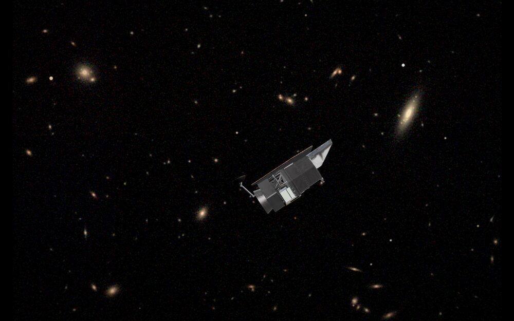
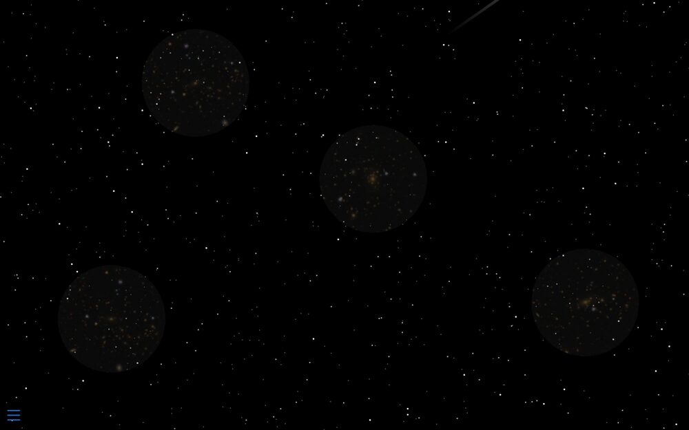
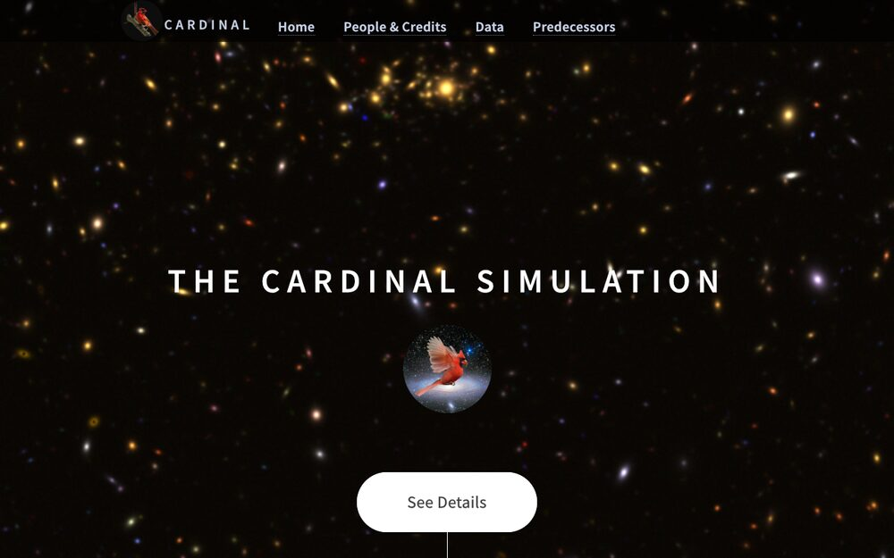

Visualisations and simulations you can explore in the browser.

NASA's Nancy Grace Roman Space Telescope crossing a deep field, rendered live from the observatory model. Drag it to stop the pass and turn it over; let go and it flies on.

A scrolling introduction to how galaxy clusters trace the growth of structure, and how they combine with other probes to constrain dark energy.

Synthetic sky catalogues built for wide imaging surveys — the data, the people behind it, and how it improves on its predecessors.